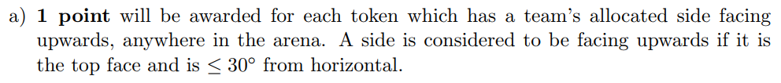
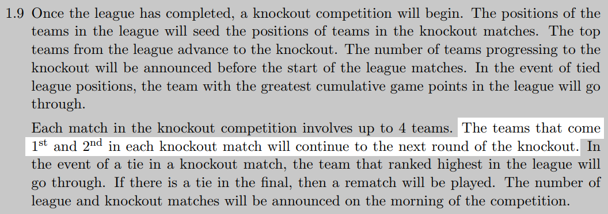
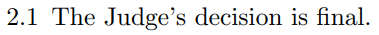
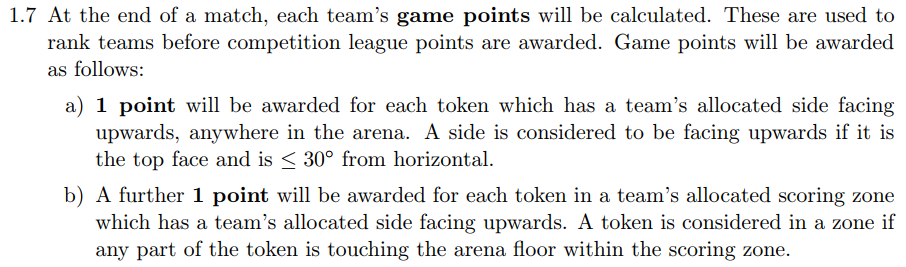
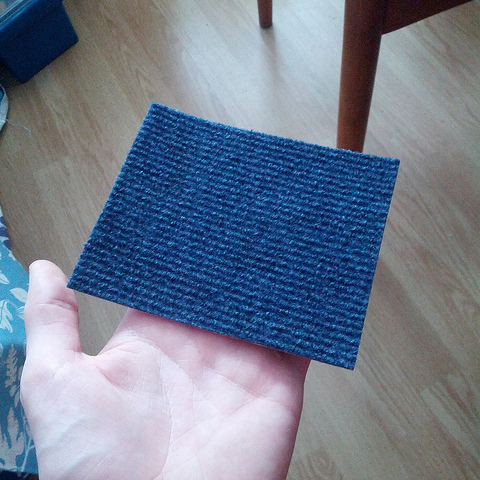
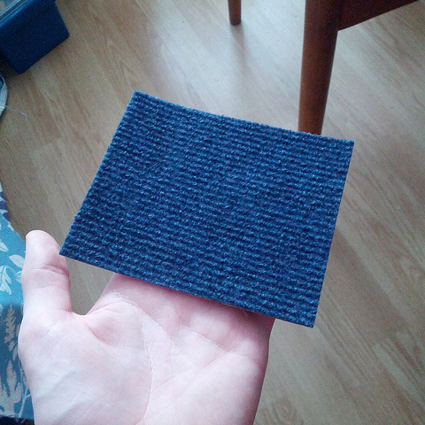
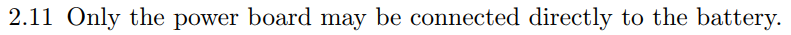

SR2016 Activity Day Quiz
13th February 2016
Get into teams of three or four, fetch a laptop and some paper if you wish, and assign a scribe.
After the first set of questions, two teams will be eliminated with the remaining two teams battling it out for…
A prize of some sort!
Question 1
How many tokens are in the arena at the beginning of a match?
Question 2
What do the following wire colours mean:
- Black?
- Red?
- Black: Ground
- Red: Power
Question 3
True or false?
Tokens which are the right way up but not touching the floor of the arena contribute to the points of the team.
True!
Tokens always give points to the team whose colour is facing upwards, regardless of whether the token is touching the ground or not.
Question 4
What are the maximum dimensions that a robot may occupy just before a match starts?
Question 5
How many degrees can a token be tilted before it no longer scores a point for a team?
30°
Question 6
True or false?
All electronics must be securely fixed to the robot and shouldn't be easily removable.
False!
All electronics must be securely fixed to the robot, but should also be easily removable.
Question 7
What year was the first competition?
2008
Question 8
“My tablet isn't connecting to the robot.”
- Is it connected to a different WiFi network?
- Is it even connected to the robot WiFi?
- What happens when you tap on the ‘Student Robotics’ app?
- What happens if you manually go to
http://robot.sr? - Is WiFi enabled?
- Try manually connecting using the WiFi key in
wifi.yaml. - Is a dongle attached to the USB hub?
Question 9
What are the dimensions of a token?
Question 10
In each knockout match, how many teams proceed to the next round?
2 teams
Question 11
How can your code find out which zone the robot is starting in?
R.zone
docs/programming/sr/#OtherRobotAttributes
Question 12
What are the dimensions of the arena and zones?
Question 13
True or false?
Teams can appeal the Judge's decision.
False!
Question 14
How many game points would be earned by the team in the green corner for each of the following tokens?
- A token located outside of any scoring zones, with its green side facing upwards.
- A token located in the green scoring zone, with its green side facing upwards.
- A token located in the green scoring zone, with its orange side facing upwards.
- 1 point
- 2 points
- 0 points

Question 15
What will the carpet be like?
 

Question 16
“My robot doesn't turn on.”
- Is the battery charged?
- Is the robot assembled correctly?
- Does the code look right? Does the robot work with minimal code?
- Are the various lights on?
- Does it work after removing individual components?
- Is the switch loop wire in?
Question 17
What are the sizes of the various libkoki markers?
Question 18
This code doesn't compile. What's wrong with it?
# look.py
from future import print_function
def look_at_things(R):
markers = R.see
print("I can see", markers.length, "markers:")
return markers.length# robot.py
from sr import *
import look.py
R = robot()
while True
if look.look_at_things():
R.motors[0].m0 = 25
R.motors[1].m0 = 25
time.sleep(2,5)
R.motors[0].m0 = 0
R.motors[1].m0 = 0
…futureshould be__future__R.seeis a function and should have round brackets after itmarkers.lengthshould belen(markers)from sr import *- module name should besr.robotimport look.pyshouldn't have extensionrobotshould beRobotwhile Truemissing colonRisn't passed tolook_at_things- Indentation is wrong after the
ifstatement R.motors[x].m0 = yshould use the.powerattribute- Missing
import time time.sleep(2,5)should have a period instead of a comma
Question 19
True or false?
The battery may only be directly connected to the power board.
True!
Question 20
Write some code to make the robot move around in a square shape.
Hint: use the simulator!
Something like this:
from sr.robot import *
import time
R = Robot()
while True:
# Move forward
R.motors[0].m0.power = 50
R.motors[0].m1.power = 50
time.sleep(2)
# Turn 90°
R.motors[0].m0.power = -25
R.motors[0].m1.power = 25
time.sleep(0.5)First set of questions are over!
Who gets eliminated?
Question 21
What do the following kit PCB colours mean:
- Blue?
- Red?
- Green?
- Blue: Team Kit
- Red: Development Kit
- Green: Commercial
Question 22
What safety checks should be performed during the competition?
- Food and drink not permitted in team pits.
- Ensure there are appropriate evacuation routes.
- Frankfurter test.
- Do not give out power tools.
- Extension leads taped down and covered.
- Make sure the arena has fire extinguishers, that haven't expired.
- Maximum of four teams in an arena at any time.
- Collect all batteries from teams at the beginning.
- The battery must be secure in the robot.
Question 23
Why can't teams use ruggeduino pins 0 and 1?
Those are reserved for serial communications with the brain board.
Question 24
How many libkoki markers are visible in the arena just before a match begins, in total?
7 markers per wall × 4 walls = 28
4 markers per robot × 4 robots = 16
5 visible markers per token × 9 tokens = 45
The sixth marker on each token is face-down against the ground!
Total: 28 + 16 + 45 =
89
Question 25
Put these games in order.
- Tin Can Rally
- Slots
- QuacMan
- Sunny Side Up
- Golf & Squirrel
- A Strange Game
- Pirate Plunder
- Capture the Flag
- Golf & Squirrel
- QuacMan
- Tin Can Rally
- Pirate Plunder
- A Strange Game
- Slots
- Capture the Flag
- Sunny Side Up